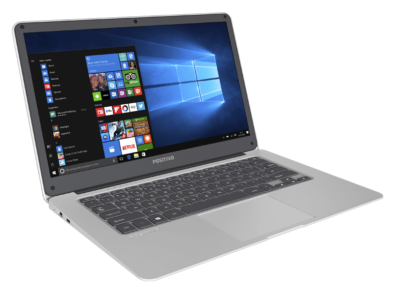

Quarto
GEEK
Início
Contato
Doações
GESHOP
Sobre
Hardware
----------
-- Explore o mundo Hardware --
O novo Motion
Notebook da Positivo é o primeiro com o próprio suporte em nuvem
Escrito por: C. Magno
Publicado em 22/10/2017

A Positivo anunciou o lançamento do Motion, trazendo a própria plataforma de arquivamento em nuvem, a 'Positivo Nuvem'.
O notebook pesa por volta de 1,5 KG, e possui acabamento emborrachado, tela LCD “narrow frame” de 14 polegadas com resolução HD, touchpad de cinco polegadas, teclado com teclas individuais, processador Intel (não especificado) com quatro núcleos, sistema operacional Windows 10, 2 GiB de memória, 32 GiB de armazenamento, (expansível através de cartão SD de até 64 GiB), conectividade Wi-Fi e Bluetooth 4.0,
duas portas USB 3.0, uma porta HDMI, entrada para microfone e fone de ouvido e bateria de 10.000 mAh com autonomia de cerca de seis horas.
O novo Positivo Motion estará à venda no Brasil por preços a partir de
R$ 1.080
.
fonte:
ClubeDoHardware